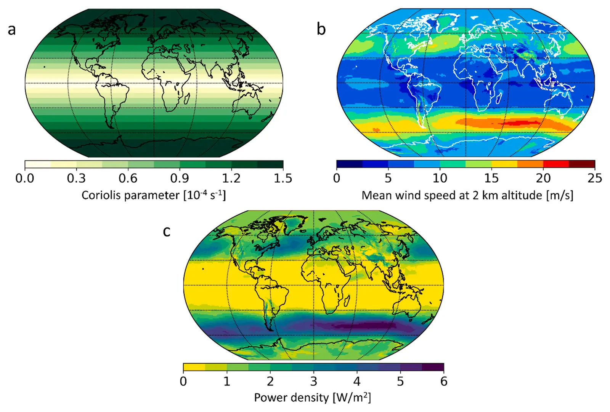

Atmospheric pressure gradients and Coriolis forces provide geophysical limits to power density of large wind farms
Key finding. Energy transport to regional-scale wind farms is governed primarily by horizontal atmospheric pressure gradients and their interaction with the Coriolis force and turbine-induced surface drag within the latitude-dependent Ekman layer; higher pressure gradients and lower Coriolis parameters permit higher power density, making the geophysical limit resource- and location-dependent rather than universal.

What question did this research address?
Observations and numerical simulations had both indicated an upper bound of order 1 watt per square metre on the land-area power density of very large wind farms. The bound was well established empirically but had no theoretical foundation.
This paper asked where the limit comes from — what physical process sets the rate at which kinetic energy removed by turbines is replenished, and why the answer should be of that magnitude.
What did we find?
The analysis combines numerical atmospheric simulations with analytic expressions, so the mechanism is derived rather than only observed.
The replenishment of kinetic energy is set by horizontal pressure gradients acting through the Ekman layer, where the Coriolis force and the drag induced by the turbines themselves determine how much energy reaches turbine height.
Because the Coriolis parameter depends on latitude, the limit does too. Lower Coriolis parameters — nearer the equator — permit greater energy availability and therefore higher potential power density.
Stronger horizontal pressure gradients likewise permit higher power density, so the limit varies with the prevailing meteorology of a region as well as with its latitude.
Why does it matter?
Supplying a theoretical basis for a previously empirical bound changes what can be done with it. A limit that is understood can be evaluated for any location, whereas an observed limit can only be reported for places already measured.
The location dependence has practical consequences for siting. Because the ceiling is not a universal constant, the maximum useful size and density of a wind farm differs between regions in ways that a single global figure conceals.
Citation, data, and code
Enrico G. A. Antonini and Ken Caldeira (2021). Atmospheric pressure gradients and Coriolis forces provide geophysical limits to power density of large wind farms. Applied Energy 281, 116048.
Related
- How much wind power can the atmosphere actually supply?
- Spatial constraints in large-scale expansion of wind power plants (Antonini and Caldeira, 2021)
- Geophysical potential for wind energy over the open oceans (Possner and Caldeira, 2017)